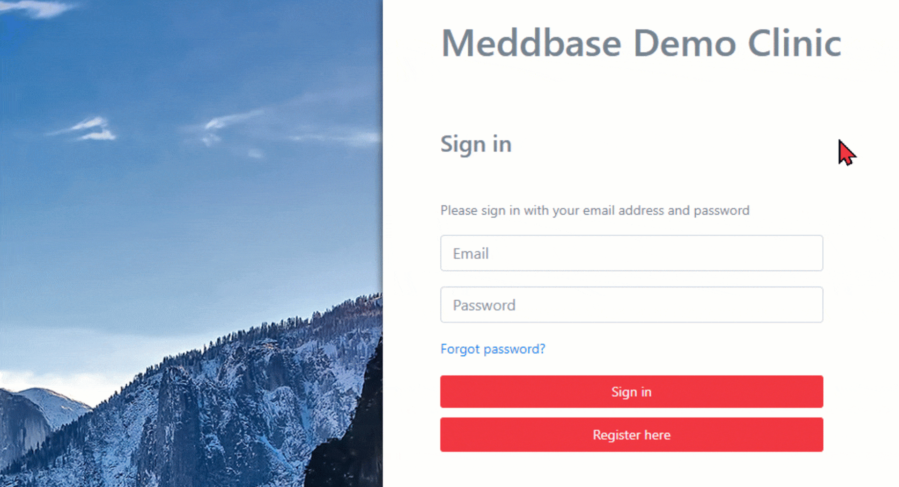
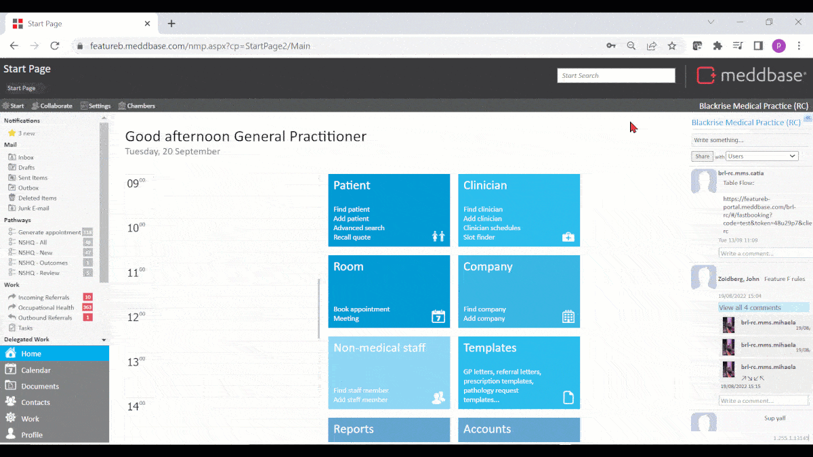
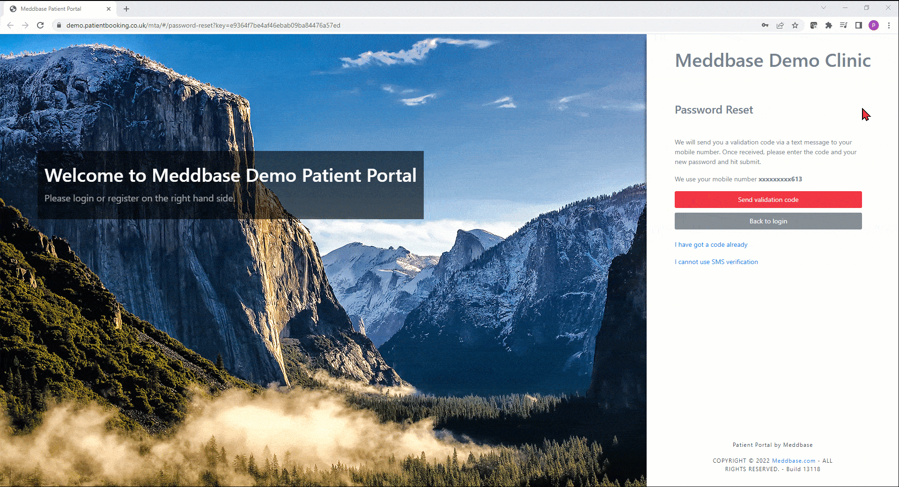
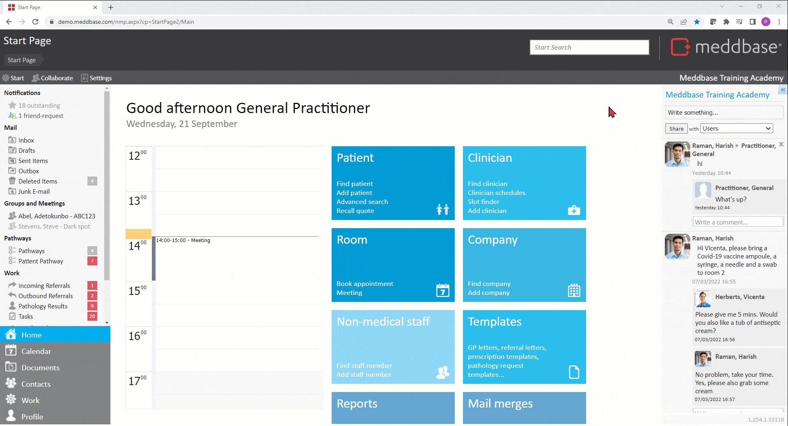
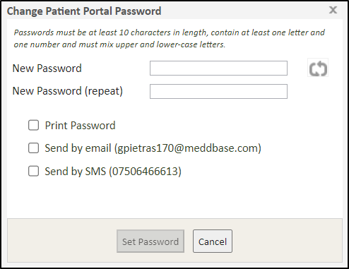

The Patient portal gives patients access to vital information related to their healthcare, i.e. medical history, invoices and more. The password reset process for the Patient Portal ensures security and prevents unauthorised access to patients' accounts.
This article will walk you through and highlight the following aspects:
Route for patients without a mobile number or those who choose not to use SMS validation
If a patient is having trouble logging into the Patient Portal, they can click Forgot password? on the logon page, enter their email address and hit Submit*.
*Patients will not be able to request password reset using the same email without waiting at least 3 minutes
*If the provided email is not linked to an active Patient Portal account, an email is sent out informing the recipient that the provided email address is not recognised, but no indication of that is shown on the Patient Portal login page. The Template generating that email is available for editing under Admin > Configuration > Online Portal > Patient portal templates > Unknown email address

The patient will receive an automated password reset email containing a link they should follow.
There are new configuration options available in Meddbase allowing patients to reset their Patient Portal password via SMS code validation instead of demographic match verification*.
*Demographic match verification is still supported, however 2FA (Two-Factor Authentication) is preferred and is enabled in your system by default.
To view and configure the new options:


If both Enable SMS validation and Enable demographics validation options are unticked, the patient will receive the reset email, however upon following the link, they will be informed that they cannot use the password reset feature. The same applies if only Enable SMS validation option is ticked, but the patient does not have a mobile phone on their Patient Record in Meddbase.
Having followed the link in the password reset email patients can choose an alternative verification route, if:
In either of the above cases, they can click I cannot use SMS validation on the Password Reset page and use demographics details validation instead.
They will then be prompted to:
*Patients can choose to go back to SMS code validation instead of submitting demographic details by clicking Use SMS verification instead. If they Submit their details and there is a mismatch between the Patient's Record in Meddbase and the details provided, the patient will see a message saying: 'Some of the personal information provided does not match our records, please check and try again'
Meddbase users can also reset Patient Portal passwords for patients in the application. To do this:-
1. From the Start Page search the database for the respective patient's record by either:
When found, click the patient in the search results.
2. Once on the Patient Record page click Patient Portal* in the top action bar, and click either:


*If your chamber utilises both the Patient Portal and the Occupational Health Portal, you may find a button labelled Online Portals in the top action bar (depending on the patient's Charge Band setup). Clicking this button will allow you to select Patient Portal and choose from the options described above.
**This option means the Meddbase user performing the action knows the patient's Portal password. This should only be used if the patient is instructed to log in to the Patient Portal and change the password as soon as possible.